Upload
Give Sagitta the match book PDF, or a photo of one stage card.
Upload the match book, or take a photo of a stage card. Sagitta, the AI built into Bullseye Ballistics, builds the whole match for you: every stage, position, target, distance and target size, with the Match Director's notes for each stage.
At the line, tap Next. The solver moves to the next target with its distance already set.
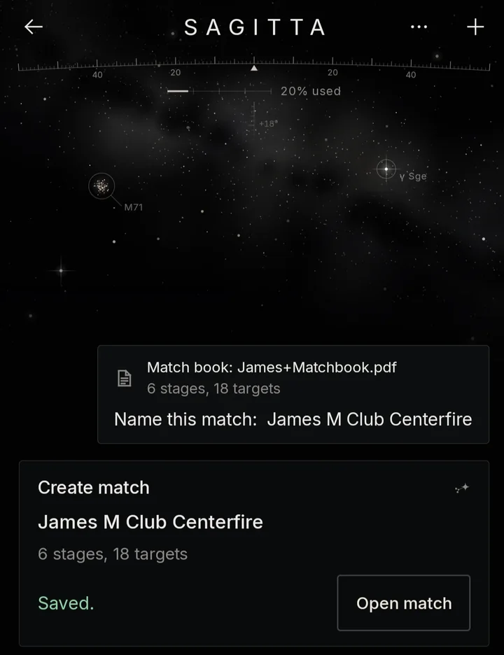

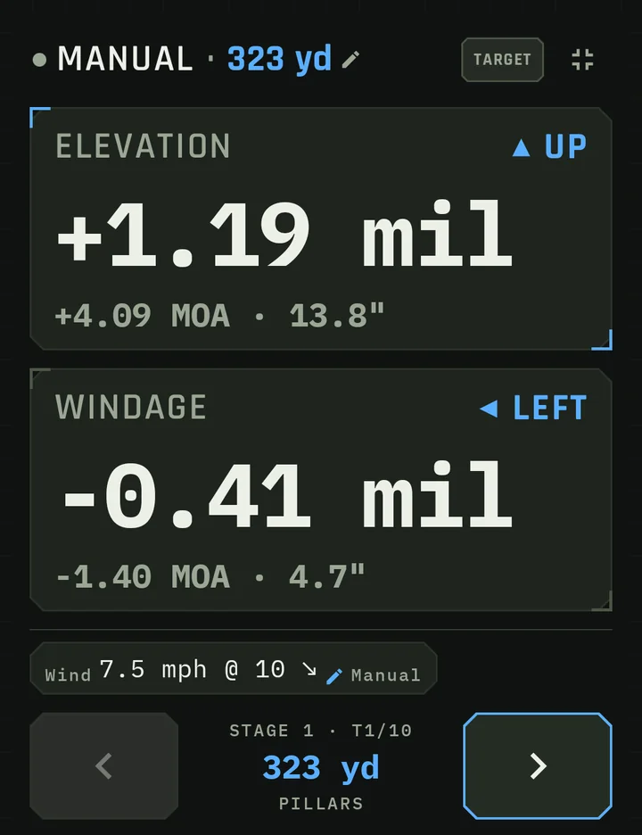
Give Sagitta the match book PDF, or a photo of one stage card.
Stages, positions, targets, distances, sizes and the course of fire, in shooting order.
Each stage shows its steps and whether they add up to max points. Fix anything with a tap.
Start a stage and tap Next after each shot. The solver already has the next distance.
Sagitta AI points out when the math doesn't math and clarity is required from the MD (happens sometimes, no big deal). You should still walk the course either way, and while doing so, capture the DOF at the stages so the solver can bake in Coriolis to your solves (optional, but a little exercise won't kill you).
Match books sometimes leave things out. A target listed as near with no distance. A round count that doesn't match the course of fire. Sagitta Ballistics AI catches these before it builds anything, so you know what to ask the MD.
Upload the match book PDF, or a photo of one stage card. Sagitta reads the rules, the course of fire and the target list the way the MD wrote them.
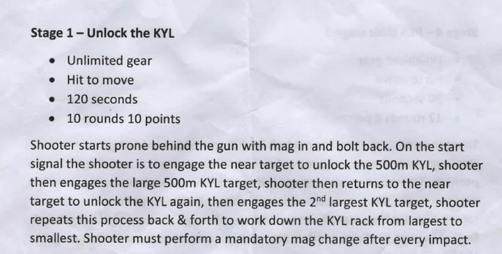
10 rounds in 120 seconds. Hit the near target to unlock each KYL plate. The card gives no distance for the near target and no plate sizes.
Before building the match, Sagitta lists what it couldn't find or what doesn't add up.
Type the distances or round counts into the chat. Sagitta adds them before it builds the match.
Tell Sagitta to go ahead and it builds the match as read. Add what's missing when you know the answers.
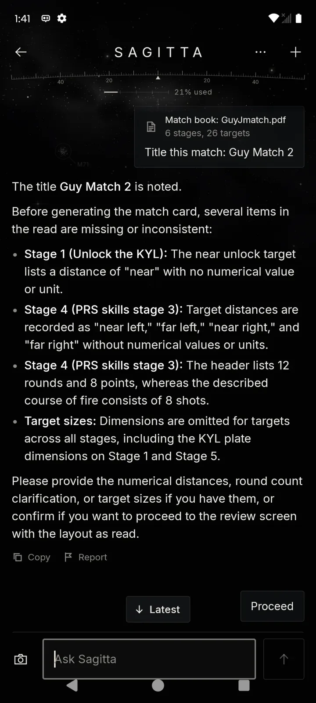
Guy Match 2: 6 stages, 26 targets, four things to check. Answer in the chat, or tell it to go ahead.
Every stage gets its time limit, points, positions, targets and the course of fire in shooting order. Distances and sizes come through wherever the match book has them.
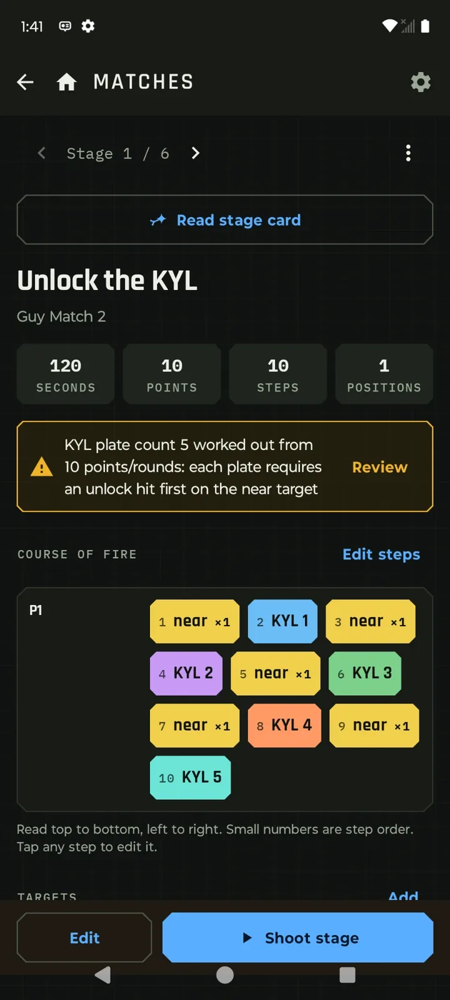
Near, KYL 1, near, KYL 2, on down the rack. Sagitta worked out five plates from the 10 points and flags it for you to review.
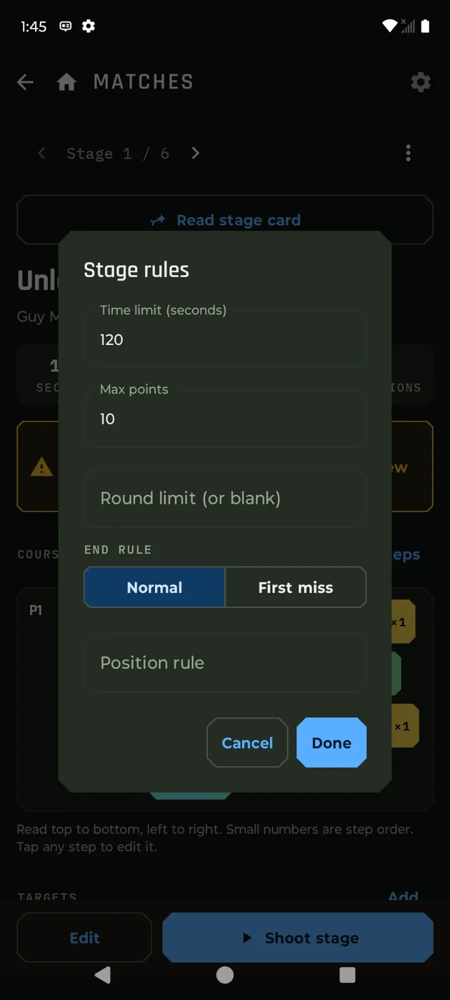
Time limit, max points, round limit, end rule and position rule. Change any of them from the stage.
Got the answer later? Open the stage and add the distance, size or round count. Nothing needs rebuilding.
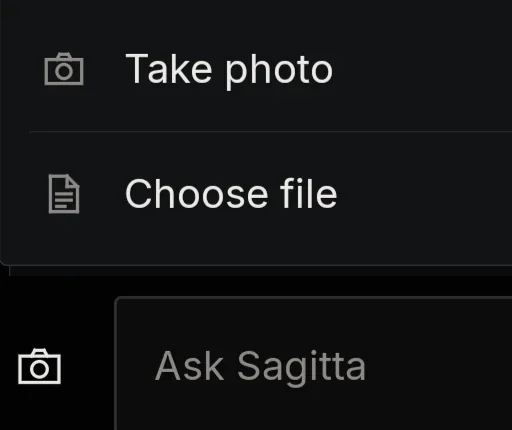
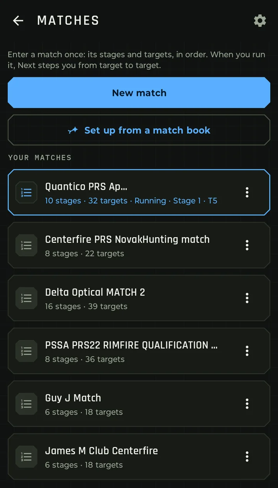
Quantico PRS April, running at stage 1, T5.
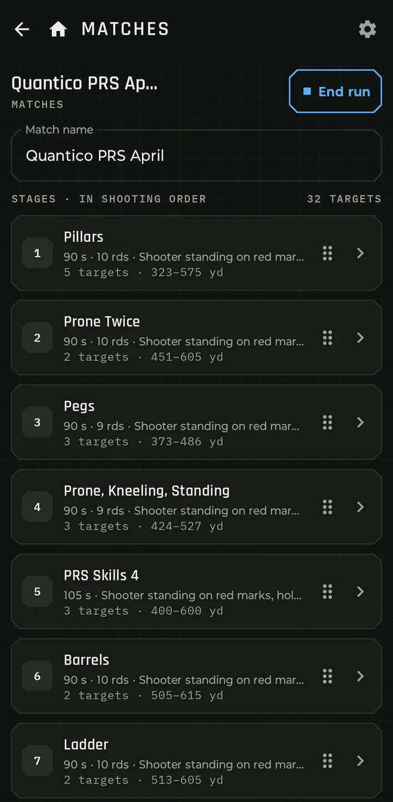
10 stages and 32 targets, in shooting order.
Tap a stage to see how it's shot. Stage 1, Pillars: two positions, five targets from each, ten shots in 90 seconds.
Time, points, steps and positions up top. The course of fire shows each position with its steps in order, color coded by target. Ready to shoot means the steps add up to the stage's max points.
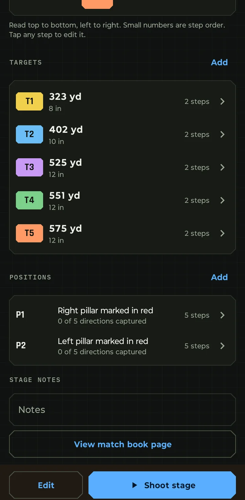
Each target's distance and size, and each position named the way the match book names it. Add your own notes under the stage.
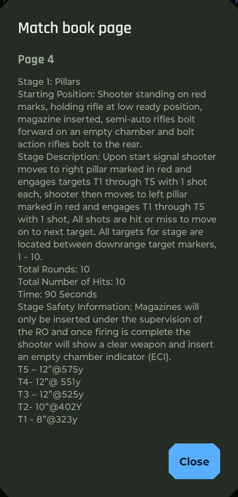
View match book page shows the page the stage came from: starting position, description, safety rules and target list, word for word.
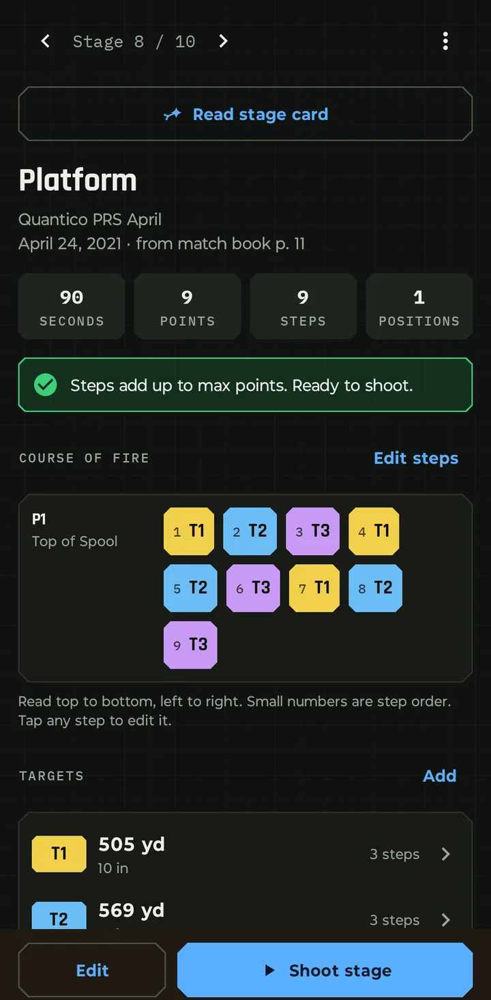
T1 to T3, three times: nine steps.
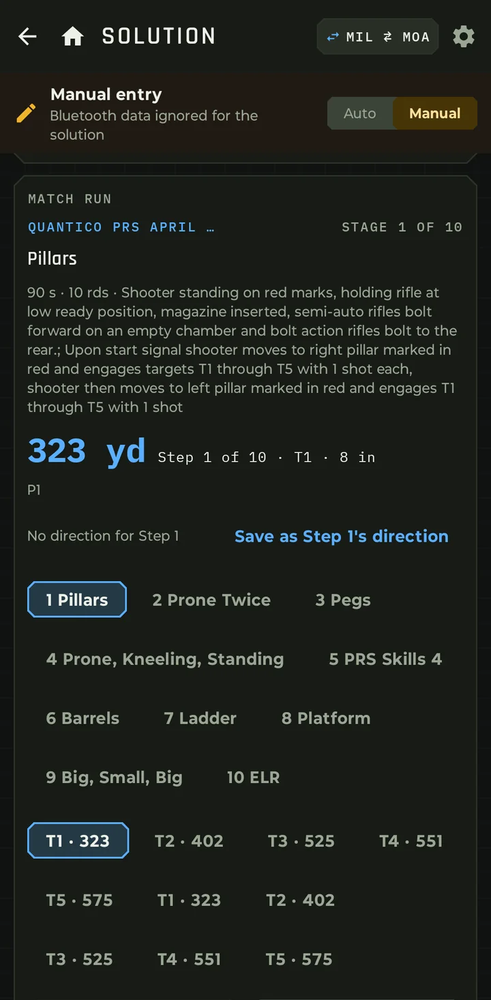
The stage description, the distance for this step and every stage and step one tap away.
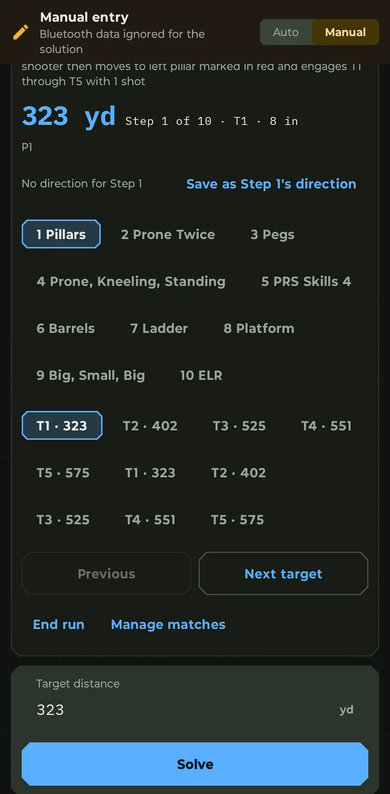
Next target and Previous move through the course of fire. The distance fills in; tap Solve.
The arrows on the full-screen card step to the next target and the dial updates. Hit or Miss logs the shot, tagged with its stage and target.
323 yd
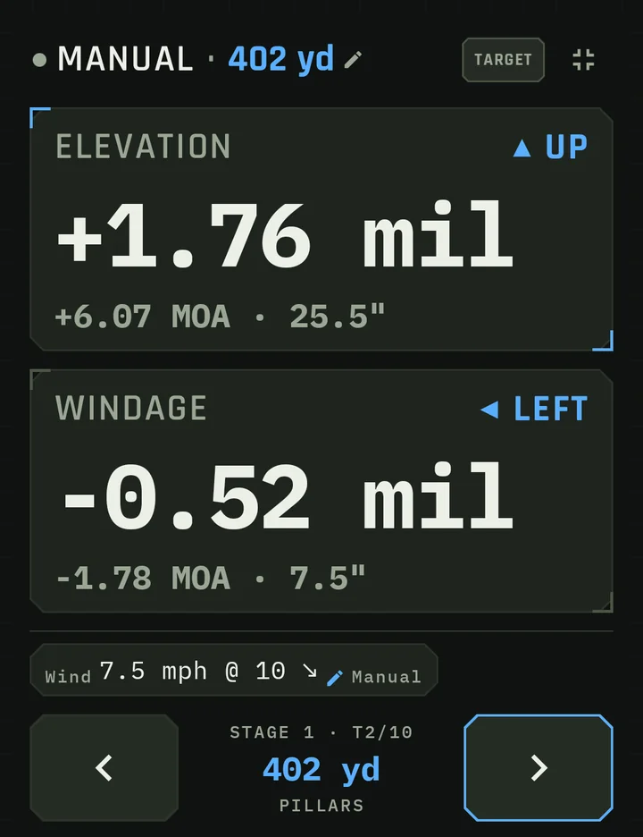
402 yd
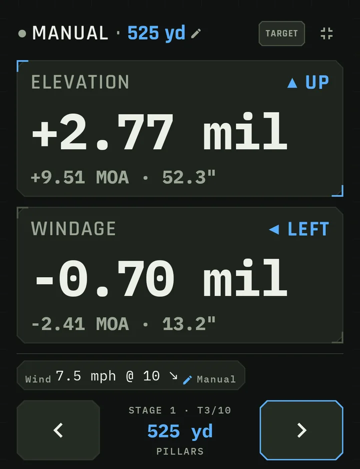
525 yd
No match book? Tap New match and add stages, positions and targets yourself. Everything else on this page works the same.
Shots you log during a run are tagged with the stage and target, so your log shows how each stage went.